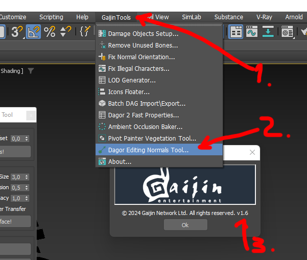
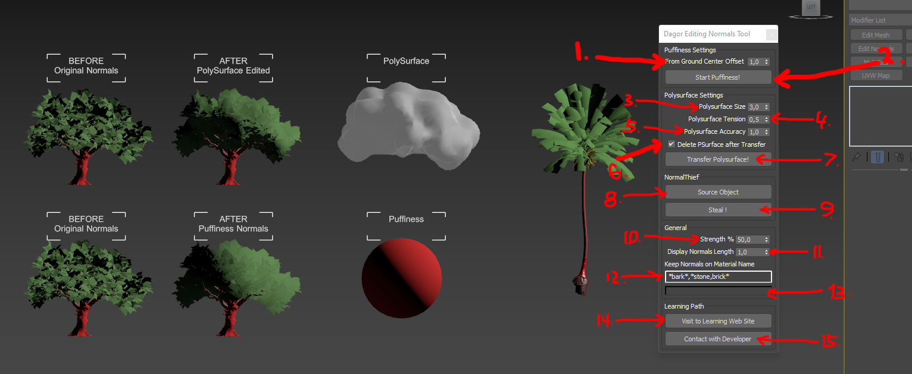
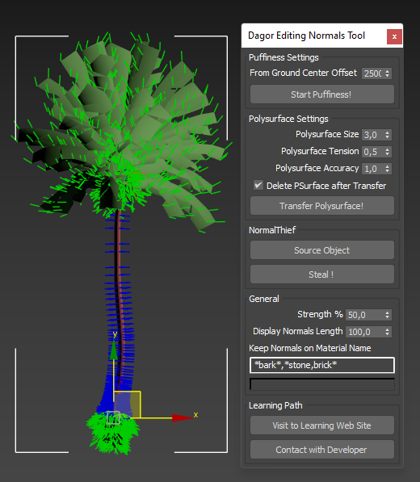
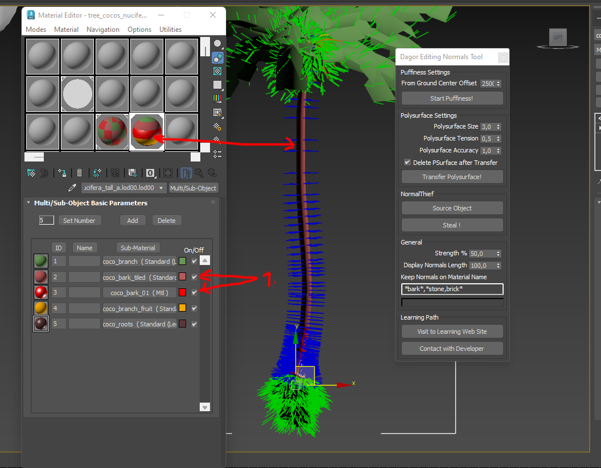
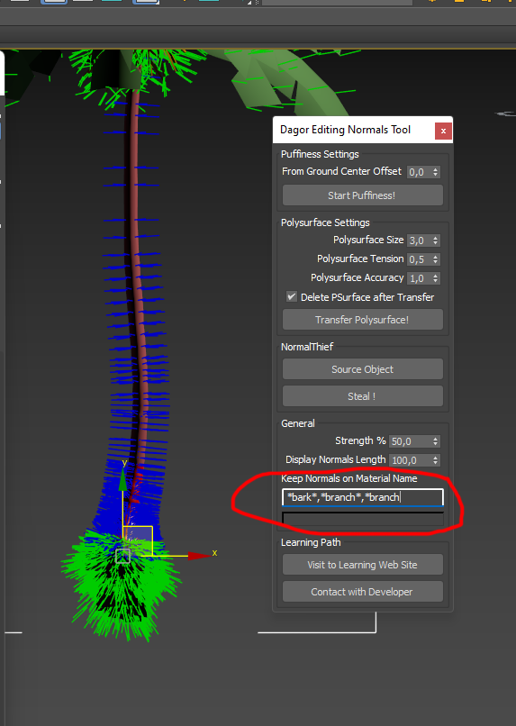
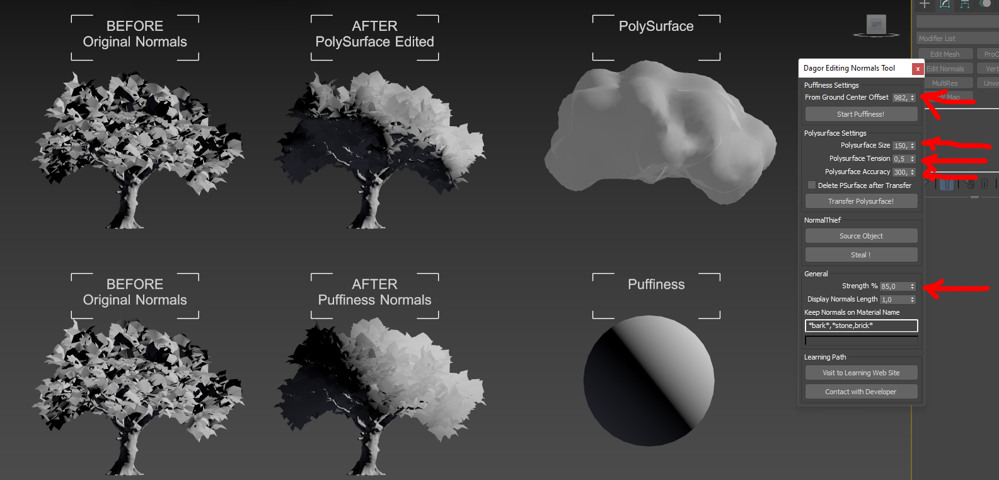
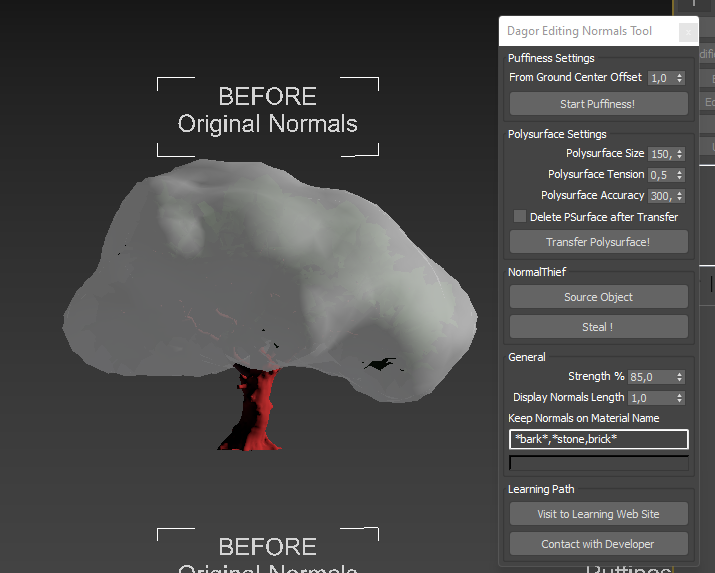

Dagor Editing Normals Tool
Installation
Install the script following the provided instructions.
Important
This script requires 3ds Max 2023 or newer version to run.
Overview
The Editing Normals Tool provides comprehensive functionality for generating and transferring vegetation normals using all widely recognized methods available at the time of publication. It supports:
Puffiness, similar to the technique used in SpeedTree.
Polysurface Method, as demonstrated by Guerrilla Games’ Gilbert Sanders during the 2018 GDC session on Horizon Zero Dawn.
Classic Normal Transfer, via the Noors Normal Thief approach, which transfers normals from a parent object.
Example of the tool’s output:
Accessing the Editing Normals Tool
Navigate to Gaijin Tools 1 > Dagor Editing Normals Tool…. This will open the main window of the Dagor Editing Normals Tool.
To verify the version 3 of the script, go to Gaijin Tools 1 > About 2. The About window will display the current version. It’s important to check this regularly to ensure your script is up to date.

{kind=link}
Note
Make sure that the plugin version is at least 1.6.
Using the Editing Normals Tool
To begin, open the tool panel by navigating to Gaijin Tools > Dagor Editing Normals Tool.
Download the following test scene:
tree_example.max.
Important
This scene requires 3ds Max 2024 or a newer version.
Interface Overview
The Editing Normals Tool interface is divided into three main sections: Puffiness Settings, Polysurface Settings, and Classic Normals Thief Settings, with a General Settings block that affects all three sections.
{kind=link}
From Ground Center Offset 1: adjusts the elevation of the Puffiness build point from the ground to the center of the build.
Start Puffiness! 2: initiates the Puffiness generation process.
Strength % 10: controls the blending ratio between the new and existing normals on the object. This is crucial when you only need to partially replace the normals’ weight. A typical range is 70% to 90%.
Display Normals Length 11: determines the duration that normals are displayed in the Viewport.
Working with Puffiness
To see how Puffiness works, set parameter Strength % 10 to
100 and parameter Display Normals Length 11 to 100 for
clear visibility. Note that the normal length is dependent on the scene’s scale
and units. Select the palm tree in the test scene (you can also process multiple
objects or LODs at once). Press the Start Puffiness! 2
button to generate the normals:
Initially, the center aligns with the tree’s base, near the Pivot. If needed,
adjust the center by setting From Ground Center Offset 1 to
2500. Remove the Edit Normals modifier generated by the script before
re-running the process. After pressing the Start Puffiness!
2 button again, you should see the result:
As you can see, everything is much better with the crown. With the crown adjusted, set the Strength % 10 to 80%, remove the Edit Normals modifier again, and run the process:
The result shows improved lighting on the large palm leaves, though issues may still exist with the root system. To address this, you may need to edit the normals on the roots separately. Some tree bark normals might remain unedited, shown as blue. The Keep Normals on Material Name 12 parameter is vital here, as it allows you to specify which materials’ normals will be processed.
{kind=link}
For instance, if the bark is named “bark,” ensure that “bark” is listed in 12. This field supports RegExp, enabling precise control over which materials are included or excluded from processing. After adjusting the expression, set the From Ground Center Offset 1 parameter to zero. After all, the center of illumination of the root beam should be just somewhere at zero. At the Pivot point of the object. Set the parameter of normal transfer strength 10 to 80% and rerun the Puffiness generation:
Polysurface Settings
The Polysurface Settings block provides advanced tools for generating and transferring normals, originally used in the Horizon Zero Dawn project. More details about the method see here.
To apply similar lighting effects to your tree, select the tree without the Edit Normals modifier and configure the Polysurface Settings and General Group as shown below. Ensure that “bark” is excluded from normal adjustments:
{kind=link}
After applying, you should see a result similar to this:
You can remove the Polysurface after generation using Delete PSurface after Transfer 6 checkbox.
Note
All Polysurface parameters are sensitive to the scene size and object scale. If values are set too high, Polysurface may not generate; too low, and it could generate with excessive triangles, causing processing issues in 3ds Max.
Adjust these settings carefully:
Polysurface Size 3: controls surface smoothness. A larger value results in a smoother surface, while a smaller value creates more detailed but less smooth surfaces.
Polysurface Tension 4: sets the surface tension. A value of 1.0 creates a maximally bulged surface, and
0.0creates a tight surface. Typically,0.5is optimal, though this may vary based on the object type (e.g., higher for conifers, lower for palm trees).Polysurface Accuracy 5: defines the step size for generating surface triangles. Smaller steps yield more precise surfaces but increase the triangle count exponentially. Usually 20-30 thousand triangles are enough to get an excellent result of Polysurface generation. Carefully reduce the value. Reducing the value by 2 times you increase the number of resulting triangles from 4 to 9 times.
Classic Normals Thief Method
The Normals Thief method, dating back to 2008, allows manual creation and projection of normals. Select the source object with the Source Object 8 button, and project normals onto the target object using the Steal ! 9.
See also
For more information, see Noors Normal Thief.
In the General Block, you can adjust the normal transfer strength 10 (default: 50%). Setting this to 100% replicates the classic Normals Thief behavior. You can also clear the material exclusion mask for full normal transfer, mimicking the original tool’s functionality.
Progress bar 13: progress bar.
Visit to Learning Web Site 14: links to this documentation.
Contact with Developer 15: provides contact information for the developer if assistance is needed.